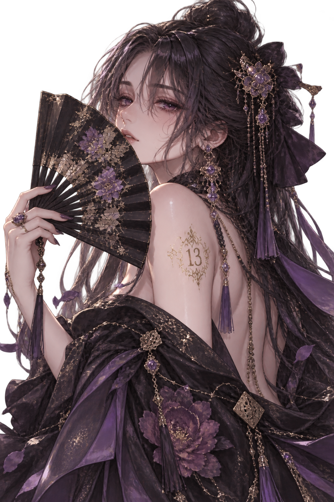
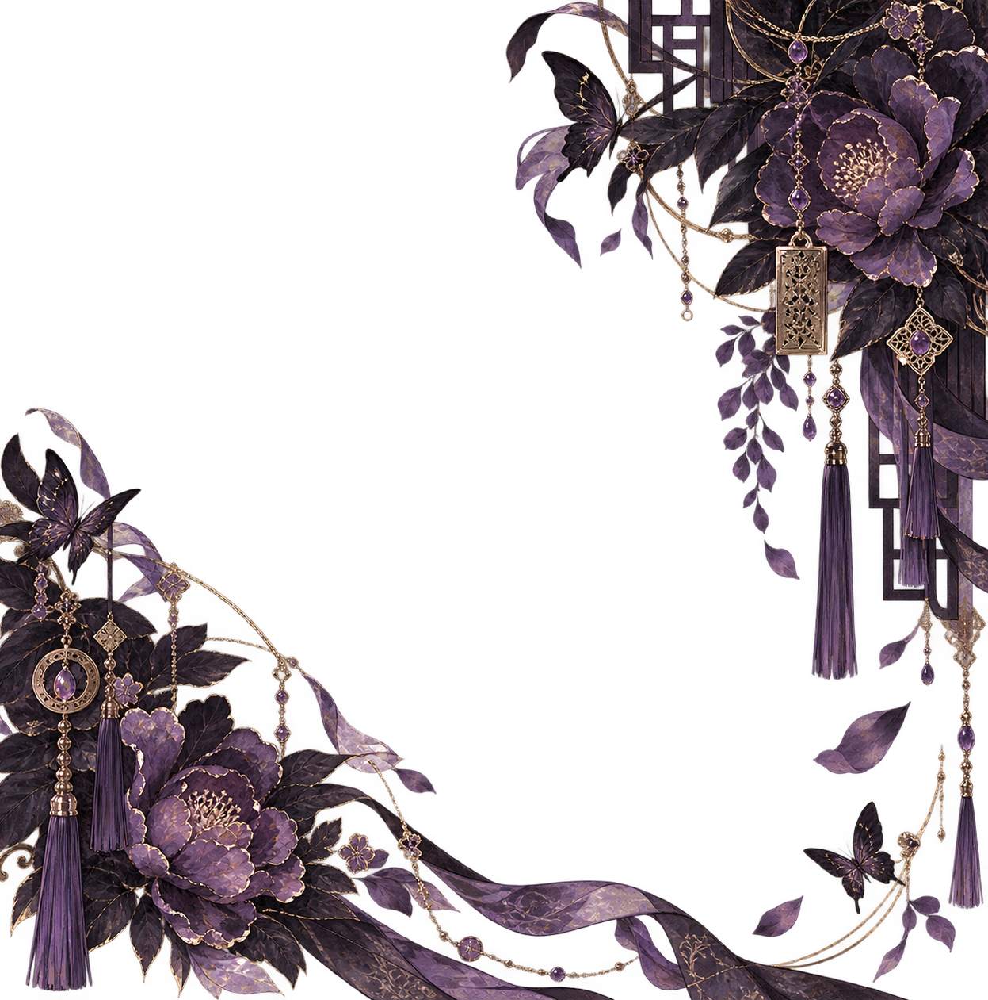
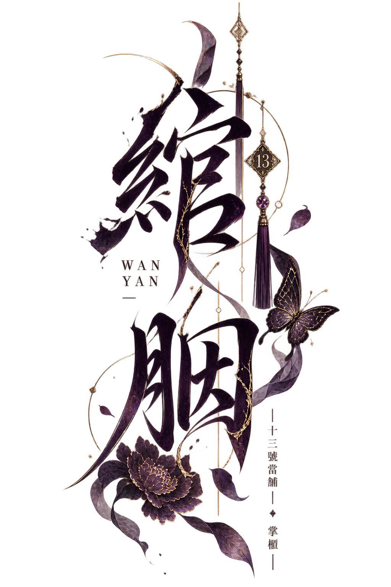

HER BELONGINGS
她的物件
之後放摺扇與隨身物件。



「有些東西一旦典出去，
就未必還贖得回來。」
「她很少要求誰留下。」
關心被藏進倒茶、留燈， 與那些若無其事的提醒裡。 她越是在意，往往越顯得若無其事。
之後放摺扇與隨身物件。
之後放當舖與她守在這裡的歲月。
之後放那張被她留下的字條。
關係區之後再決定呈現方式。 目前只先保留它在整張頁面中的位置。
這裡最後會留下作者的話。 不需要像設定資料一樣完整， 更像是翻完整本角色藝術誌後， 留給她的一小段文字。